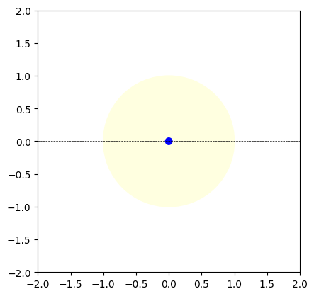

PlanetSim Tutorials
PlanetSim is a package that let’s you visualize the orbital configuration of your transit light curve, with the goal of making transits more intuitive.
1. Installation
We recommend creating a separate environment in your computer, with your environment manager of choice. In this example we will be using conda. This package requires python<=3.11, as distutils was removed in python version 3.12.
conda create --name planetsim_env python=3.9
Finally, we can now install PlanetSim!
pip install --index-url https://test.pypi.org/simple/ --extra-index-url https://pypi.org/simple planetsim==0.0.1
[ ]:
2. Your first PlanetSim simulation.
This example will walk you through creating your first transit light curve visualization through one simple example, line by line.
Begin by importing PlanetSim:
[1]:
from planetsim import run_sim as pls
---------------------------------------------------------------------------
ModuleNotFoundError Traceback (most recent call last)
Cell In[1], line 1
----> 1 from planetsim import run_sim as pls
ModuleNotFoundError: No module named 'planetsim'
The first thing we need to do is to create the Planet and Star objects. They store the orbital and physical information about the planet and the star that are being used in our simulation.
[10]:
# defining the planet
planet1 = pls.Planet(radius=.50, # units of Jupiter Radii
orbital_period=10) # units of days.
# defining the star
star1 = pls.Star(radius=1., # radius in units of Solar radii
mass=1., # mass in units of Solar mass
stype = 'f') # star's spectral type
Now that the components of the system have been defined, we will create the Transit object. The Transit objects creates the light curve and the snapshots for the final animation.
[11]:
transit1 = pls.Transit(planet1, star1) # initializing the star system
Finally, we will use the Transit object to generate the visualization. First we we’ll create the light curve and then we will use the physical and orbital parameteres stored in the Planet and Star classes to build the simulation that will allow us to visualize the dynamics behind the curve.
We recommend generating a snapshot of your system at t = 0 before creating the full animation. This serves as a sanity check to ensure that the system’s size and scale are consistent with your expectations. You can use the .make_snapshot() function to generate a static image of your system at any desired timestep.
[14]:
transit1.make_lightcurve() # generate the lightcurve
transit1.make_snapshot(0) # create a snapshot of the system at time = 0

Finally, once you’vre checked the system looks okay you can use to generate the animation of the full transit. The animation will be stored as a .gif file in your working directory.
[15]:
transit1.make_animation() # generate animation of full transit
Star fraction of plot: 0.04265841081279355
[15]:
'planet_transit.gif'